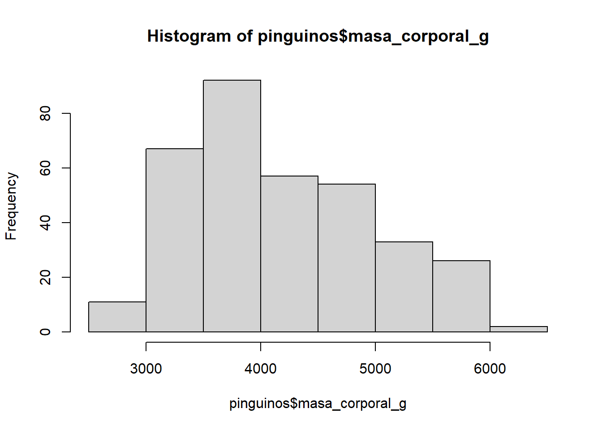
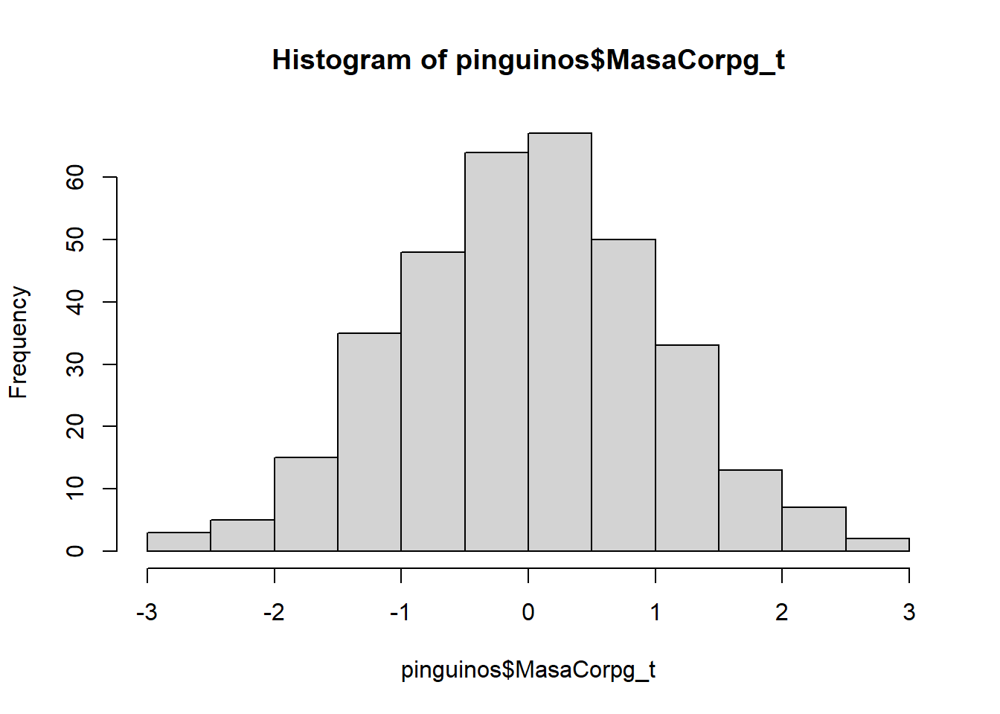
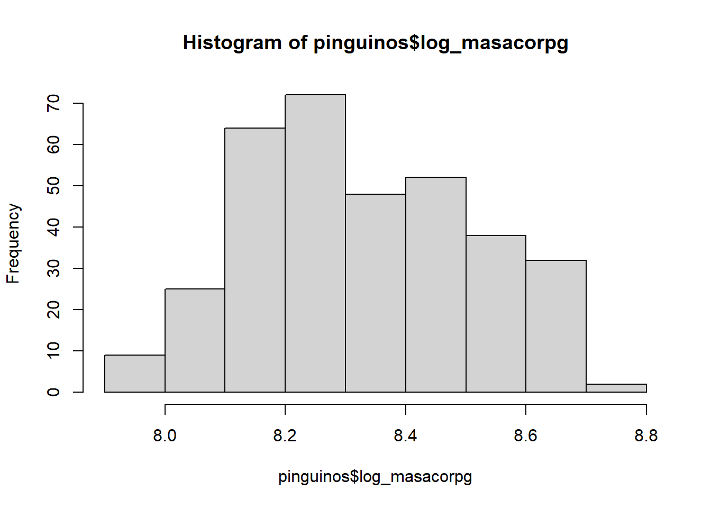
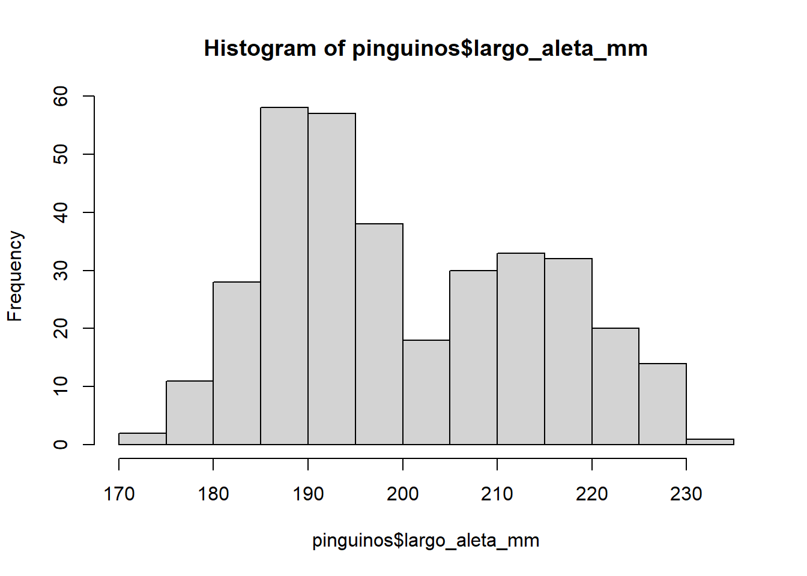
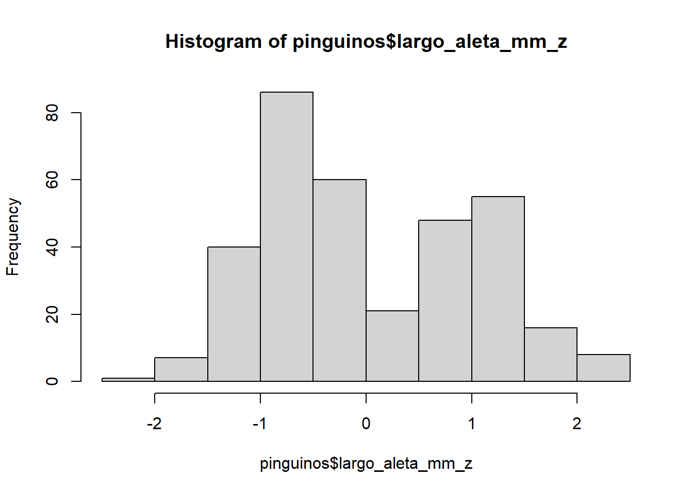

library(datos)
clima <-datos::clima
# factor
clima$origen <- as.factor(clima$origen)
clima$anio <- as.factor (clima$anio) # año/mes/día/hora son factores porque números mas grandes no realmente son mas
clima$mes <- as.factor(clima$mes) # ej: enero (1) no es menos de diciembre (12), y como número aparece así
clima$dia <- as.factor(clima$dia) # entonces usamos como factor
clima$hora <- as.factor(clima$hora)
clima$direccion_viento <- as.factor(clima$direccion_viento) # es decir N/S/E/W no valores
# número/numeric
clima$temperatura <- as.numeric(clima$temperatura) # temperatura, al otro lado, si realmente cambia cuando crece
clima$humedad <- as.numeric(clima$humedad)
clima$velocidad_viento <- as.numeric(clima$velocidad_viento)
clima$precipitacion <- as.numeric(clima$precipitacion)
clima$visibilidad <- as.numeric(clima$visibilidad)
# fecha
clima$fecha_hora <- as.Date(clima$fecha_hora)
# integer/entero
# dataframe$columno <- as.integer(dataframe$mismocolumno)C6-normalizacion
Manejando datos para modelar
Había varías cosas, depende en sus datos, que puede o, a veces debe, hacer antes de modelar sus datos. Incluyen: asegurar los típos de datos en R, normalizar, y tomar un idea del limites y formas de sus datos.
Porque? Para asegurar que cumplen con los suposiciónes de sus modelos y que cuando hacen modelos que ellos son lo mas correcto posible.
Típos de datos (data types)
Data types o típos de datos, son la categoría asignada a sus datos. Puede determinarla en excel, pero igual es posible en R.
Debe tener caución con sus datos, porque si haya una columna de números, pero es asignado como texto, no puede hacer procesos o funciones matemáticas con ellos. O sea, que sus scripts pueden fallar por causa de típos incorrectos de datos.
Había muchas típos, pero lo mas comunes son:
| Típo | Descripción |
|---|---|
| Factor | Puede ser número, entero o texto, pero la idea es que no representa su valor exacto, sino que niveles o distinciones entre sitios. ej: sus sitios, tiempo de observación, etc.. |
| Número (numeric) | Un número (no entero) que quiere usar como número ej: porcentaje de floración, concentración de carbon, etc.. |
| Entero (integer) | Un número entero que quiere usar como número ej: abundancia de abejas, riqueza de especies |
| Caracter (texto) | Pura texto, apto para apuntes o columnas que no va a usar en sus modelos. |
| Fecha (date) | Una fecha (formato especial, pero igual puede usar como factor) |
Despúes de identificar sus típos de datos deseados, puede cambiarlos en R y guardar en lo mismo dataframe (en la misma columna porque se cambia solo el típo de dato y ningún otro información.
Transformación y Normalización
Transformación y sormalización son temas complicadas, que pueden significar varias cosas.
Tienen varios funciones en la sciencia de datos:
crear un ‘scale’ para comparar datos que tienen medidas de distintas unidades (ej: mm con grados celsius, o cm con litres)
intentar a ponder datos irregulares en una distribución normal (a veces no funciona, pero puede intentar)
para tomar en cuenta distinciones entre sitios que no tienen variable (si usas algo como un ‘z score’)
Se puede hacer de varias metodos, y hay ambas paquetes que tienen estas funciones. Algunos de mis favoritos son: bestNormalize, log, y z-score. Pero es importante saber cual metodo es adecuado para sus propios datos. También puede encontrar nuevos metodos en un paper o el internet y usalos, pero acá son tres comúnes.
Sino que quieres crear un ‘scale’ parecida para variables con distintas medidas, o para normalizar, empece con un histogram de sus datos.
pinguinos <- datos::pinguinos
hist(pinguinos$masa_corporal_g)
# podemos ver que quizas no es normal (poquito a la izquierda)bestNormalize (normalizar)
El paquete ‘bestNormalize’ fue diseñado a elegir un transformación beneficial entre varias (boxcox, ordernorm, sqrt, arcsin, center scale, log, yeo-johnson, y double reverse log).
library(bestNormalize)
hist(pinguinos$masa_corporal_g) # aparece normal? si o no?bestNormalize(pinguinos$masa_corporal_g) # elegir el metodo con el numero mas bajo (aca ordernorm)Best Normalizing transformation with 342 Observations
Estimated Normality Statistics (Pearson P / df, lower => more normal):
- arcsinh(x): 1.2646
- Box-Cox: 1.1939
- Center+scale: 1.6206
- Double Reversed Log_b(x+a): 3.0173
- Log_b(x+a): 1.2646
- orderNorm (ORQ): 1.2806
- sqrt(x + a): 1.4233
- Yeo-Johnson: 1.1939
Estimation method: Out-of-sample via CV with 10 folds and 5 repeats
Based off these, bestNormalize chose:
Standardized Box Cox Transformation with 342 nonmissing obs.:
Estimated statistics:
- lambda = -0.465651
- mean (before standardization) = 2.10287
- sd (before standardization) = 0.003880517 ON.MasaCorpg <- orderNorm(pinguinos$masa_corporal_g) #orderNorming y guardar como factorWarning in orderNorm(pinguinos$masa_corporal_g): Ties in data, Normal distribution not guaranteedpinguinos$MasaCorpg_t <- ON.MasaCorpg$x.t # guardar todo con '_t', o sea, fue transformado
hist(pinguinos$MasaCorpg_t) # histogram para ver normalidad de variable
shapiro.test(pinguinos$MasaCorpg_t) # Prueba de normalidad
Shapiro-Wilk normality test
data: pinguinos$MasaCorpg_t
W = 0.99931, p-value = 1A veces todos los metodos en bestNormalize son superparecidos; por ser caso, puede elegir lo mas bajo o lo mismo para todo sus variables. Es recomendable usar lo mismo metodo para todos tus variables.
log (transformar)
A veces puede usar un log() para transformar sus datos. Solo cambiar sus números con el log de los números. Puede hacerse y guardar como nueva columna o en parte de un modelo.
hist(pinguinos$masa_corporal_g)
pinguinos$log_masacorpg <- log(pinguinos$masa_corporal_g)
hist(pinguinos$log_masacorpg)
z-score
La función ‘scale()’ es parte del R y se usa para ‘z-scores’.
hist(pinguinos$largo_aleta_mm)
pinguinos$largo_aleta_mm_z <- scale(pinguinos$largo_aleta_mm)
hist(pinguinos$largo_aleta_mm_z)
ejercicios
- Guardar sus datos con el típo correcto
- Elegir el metodo mejor de transformar sus datos
- Transforma cada variable que quiere usar